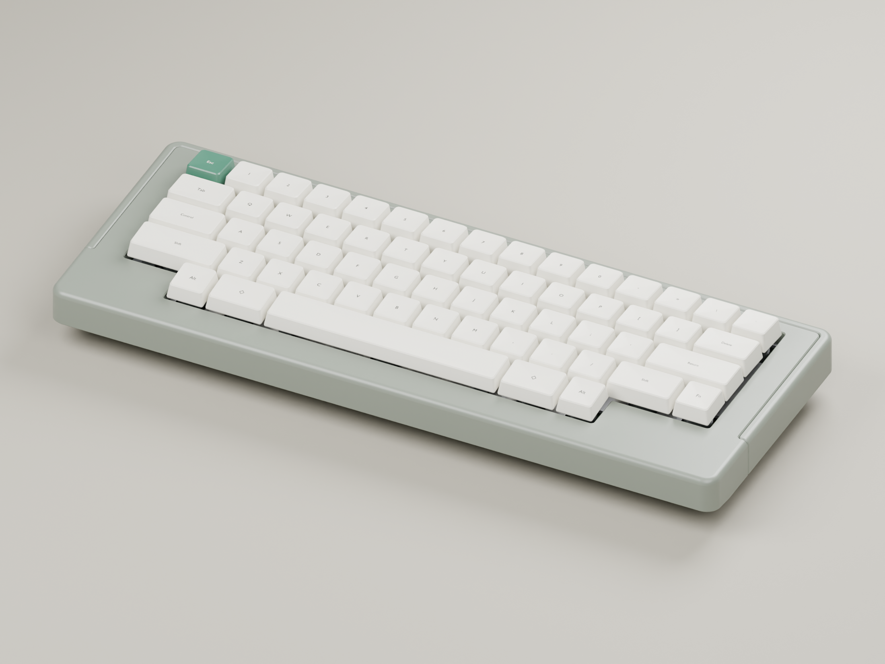

YETI60 / E73 delivery
ENGINEERING REVIEW · ORDER RELEASE OPEN
Review the mainboard as ordinary 4-layer FR-4, nominal 1.6 mm, JLC04161H-7628, ENIG, mechanical through holes and both-side tented vias. No blind/buried/laser vias, resin fill or copper capping. Board envelope: 285.0 × 94.6 mm; install one mainboard, order quantity subject to the factory minimum. Reuse the existing C5 daughterboard. The plate is machined 304 stainless steel, finished 1.55–1.60 mm; it is neither a PCB nor a resin print. Case files use millimetres at 100% scale; fully post-cure engineering resin, finish bores and cold-bond inserts per the assembly specification.

Top STEP · Plate DXF · Markdown · Manifest / SHA-256